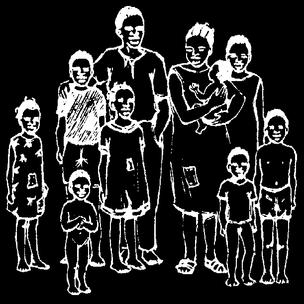
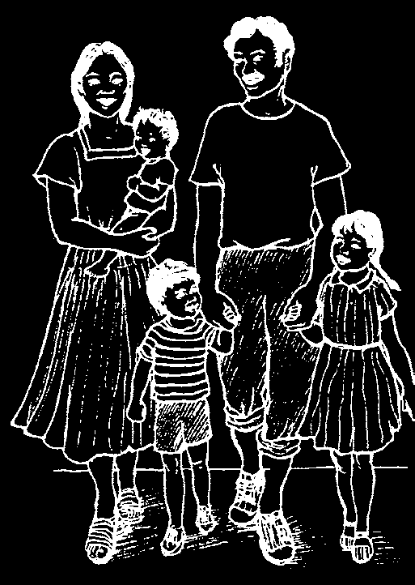
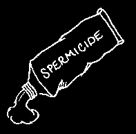
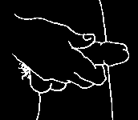
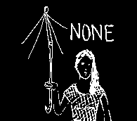
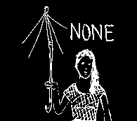
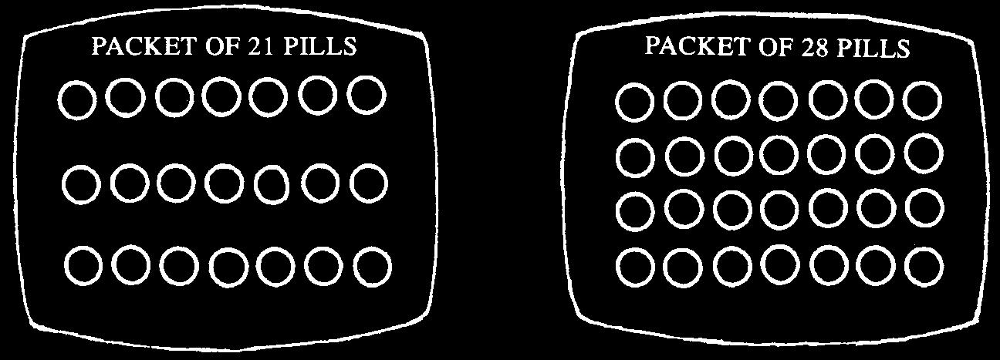

Out-of-place or Ectopic Pregnancy
womb or uterus—
Sometimes a baby begins to form where a baby outside the womb, in one of the tubes is normally that comes from the ovaries.
made
There may be abnormal menstrual tube bleeding together with signs of to ovary pregnancy—also severe cramps low in the belly and a painful lump outside the womb.
ovary—where the eggs are
A baby that begins to form out of place made cannot live. Ectopic pregnancy requires surgery in a hospital. If you suspect vagina this problem, seek medical advice soon, as dangerous bleeding could vulva— start any time.
or lips of vagina

MISCARRIAGE (SPONTANEOUS ABORTION)
A miscarriage is the loss of the unborn baby. Miscarriages are most frequent in the first 3 months of pregnancy. Usually the baby is imperfectly formed, and this is nature’s way of taking care of the problem.
Most women have one or more miscarriages in
The embryo of a their lifetime. Many times they do not realize that they miscarriage may be no longer are having a miscarriage. They may think their period than 1 or 2 centimeters.
was missed or delayed, and then came back in a strange way, with big blood clots. A woman should
30 days learn to know when she is having a miscarriage, because it could be dangerous.
A woman who has heavy bleeding after she has missed one or more periods probably is having a miscarriage.
A miscarriage is like a birth in that the embryo (the
60 days beginning of the baby) and the placenta (afterbirth)
must both come out. Heavy bleeding with big blood clots and painful cramps often continues until both are completely out.
Treatment:
The woman should rest and take ibuprofen (p. 379) or codeine (p. 383) for pain.
If heavy bleeding continues for many days:
♦ Get medical help. A simple operation may be needed to clean out the womb
(dilatation and curettage, or D and C, or suction).
♦ Stay in bed until the heavy bleeding stops.
♦ If the bleeding is extreme, follow the instructions on page 266.
♦ If fever or other signs of infection develop, treat as for Childbirth Fever
(see p. 276)
♦ A woman may continue to bleed a little for several days after the miscarriage.
It will be similar to her menstrual flow (period).
♦ She should not douche or have sex for at least 2 weeks after the miscarriage, or until the bleeding stops.
♦ If she is using an IUD and has a miscarriage, serious infection may occur.
Seek medical help fast, have the IUD removed, and give antibiotics.

HIGH RISK MOTHERS AND BABIES
A note to midwives or health workers or anyone who cares:
Some women are more likely to have difficult births and problems following birth, and their babies are more likely to be underweight and sick. Often these are mothers who are single, homeless, poorly nourished, very young, mentally slow, or who already have malnourished or sickly children.
Often if a midwife, health worker, or someone else takes special interest in these mothers, and helps them find ways to get the food, care, and companionship they need, it can make a great difference in the well-being of both the mothers and their babies.
Do not wait for those in need to come to you. Go to them.


CHAPTER
Family Planning —
Having the Number of Children You Want
BOTH THESE FAMILIES LIVE IN POOR COMMUNITIES:
This family lives where wealth
This family lives where is distributed unfairly.
resources are distributed fairly.
Some mothers and fathers want a lot of children—especially in countries where poor people are denied a fair share of land, resources, and social benefits. This is because children help with work and provide care for their parents in old age. In such areas, having just a few children may be a privilege only wealthier people can afford.
The situation is different in poor countries where resources and benefits are fairly distributed. Where employment, housing, and health care are guaranteed and where women have equal opportunities for education and jobs, people usually choose to have smaller families. This is in part because they do not need to depend on their children for economic security.
In any society, parents have a right to make their own decision about how many children to have, and when to have them.
Different parents have different reasons for wanting to limit the size of their family. Some young parents may decide to delay having any children until they have worked and saved enough so that they can afford to care for them well. Some parents may decide that a small number of children is enough, and they never want more. Others may want to space their children several years apart, so that both the children and their mother will be healthier. Some parents feel they are too old to have more children. In some places, men and women know that if they have a lot of children, when the children grow up there may not be enough land for all of them to grow the food their families need.

FAMILY PLANNING
Having the number of children you want, when you want them, is called family planning. If you decide to wait to have children, you can choose one of several methods to prevent pregnancy. These methods are called family planning methods, child spacing methods, or contraception.
Every year, half a million women die of problems from pregnancy, childbirth, and unsafe abortion. Most of these deaths could be prevented by family planning.
For example, family planning can prevent dangers from pregnancies that are:
• in young women. Women under the age of 18 are more likely to die in childbirth because their bodies are not fully grown. Their babies have a greater chance of dying in the first year.
• in older women. Older women face more danger in child bearing, especially if they have other health problems or have had many children.
• too close. A woman’s body needs time to recover between pregnancies.
• too many. A woman with more than 4 children has a greater risk of death after childbirth from bleeding and other causes.
Millions of women safely use the family planning methods described in this chapter and on pages 394 to 397.
Choosing a Family Planning Method
On the following pages, several methods of family planning are described. Each one works better for some people than others. Study these pages and talk with your midwife, health worker, or doctor about what methods are available and are likely to work best for you. As you read about each method, here are some questions you may want to consider:
• How well does it prevent pregnancy?
• How easy is it to use?
How effective is it?
• How much does it cost?
• How well does it protect against
• Is it easy to get? Will you need to
HIV and other sexually transmitted visit the health center often?
infections, if at all?
• Will the side effects (the problems
• How safe is it? If a woman has any of the method may cause) create the health problems mentioned in this difficulties for you?
chapter, she may need to avoid some types of family planning methods.
Family planning methods work best when both the man and the woman take responsibility for preventing pregnancy and protecting each other from sexually transmitted infections (STIs).
The chart on the next page shows how well each family planning method works to prevent pregnancy and to protect against STIs. The stars in the chart show how well each method prevents pregnancy. When a man and a woman use a method correctly every time they have sex, the method will work better.












FAMILY PLANNING
Protection Protection
Possible
Other important
METHOD
from pregnancy from STIs side effects information
Condom for
Most effective when men
★★ used with spermicide and lubricant (liquid to good wet the condom).
Condom for
Less effective when women
★★ the woman is on top good of the man during sex.
Diaphragm
★★
Most effective when used with
(with spermicide)
good spermicide.
Spermicide
More effective when
★ skin used with another allergy some method like diaphragm or condom.
Hormonal methods
Birth control pill,
★★★ nausea,
These methods may patch, injections very good headaches, be dangerous for changes women with certain in monthly health problems.
bleeding
Consult a health worker.
★★★★
Implants best
Sex without intercourse
★★★★
Couples may have a hard time sticking to
(penis not inside best this method.
vagina at all)
The mucus
To use this method method
★★ correctly, a woman must understand good when she is fertile.
Breastfeeding
To use this method, a woman must give
(during the first
★★ her baby only breast
6 months only)
good milk, and her monthly bleeding must not have returned yet.
Pulling out
★
More effective when
(withdrawal)
used with another some method like spermicide or diaphragm.
IUD heavy and
This method may be
★★★★ painful dangerous for women monthly with certain health best bleeding problems. Consult a health worker.
Sterilization
Women or men will
★★★★
never be able to
have babies after this best operation.

BIRTH CONTROL PILLS (ORAL CONTRACEPTIVES)
Birth control pills are made of chemicals (hormones) that normally occur in a woman’s body. When taken correctly, the 'pill’ is one of the most effective methods for avoiding pregnancy. However, certain women should not take birth control pills if they can use another method (see p. 288). Birth control pills do not prevent HIV or any other sexually transmitted infections. To prevent these infections, use a condom (p. 290).
The pills usually come in packets of 21 or 28 tablets. The packets of 21 are often less expensive, and of these, some brands are cheaper than others. The amount of medicine differs in different brands. To pick the kind that is right for you, talk to a health worker, midwife, or see the GREEN PAGES, pages 393 and 394. The pills will not prevent pregnancy immediately. So, during the first 7 days on pills, use condoms or another method to avoid pregnancy.
How to take the pills—packet of 21:
Take the first pill on the first day of your period, counting the first day of the period as day 1. Then take 1 pill every day until the packet is finished (21 days). Take your pills at the same time each day.
After finishing the packet, wait 7 days before taking any more pills. Then begin another packet, 1 pill each day.
This way, you will take the pills for 3 weeks out of each month, then go 1 week without taking any. Normally, the menstrual period will come during the week when the pill is not taken. Even if the period does not come, start the new packet 7 days after finishing the last one.
If you do not want to get pregnant, it is important to take the pills as directed—1 every day. If you forget to take the pill one day, take it as soon as you realize this, or take 2 the next day.
Packet of 28 pills:
Take the first pill on the first day of the period, just as with the packets of 21. Take
1 a day. Seven of the pills will probably be a different size and color. Take these pills last (one a day) after the others have all been taken. The day after you finish the packet of 28, start another packet. Take 1 a day without ever missing a day, packet after packet, for as long as you want not to get pregnant.
No special diet must be followed when taking the pill. Even if you happen to get sick with a cold or another common illness while taking birth control pills, go right on taking them. If you stop taking the pills before the packet is used up, you may become pregnant.
Side effects:
Some women get a little morning sickness, swelling of the breasts, or other signs of pregnancy when they first start taking the pill. This is because the pill contains the same chemicals (hormones) that a woman’s body puts into her blood when she is pregnant. These signs do not mean she is unhealthy or should stop taking the pill.
They usually go away after the first 2 or 3 months. If the signs do not go away, she may need to change to a kind with a different amount of hormone. This is discussed in the GREEN PAGES (p. 393 and 394).
Most women bleed less than usual in their monthly period when they are taking the pill. This change is usually not important.
“Is it dangerous to take oral contraceptives?”
Like all medicines, birth control pills may cause serious problems in certain persons (see next pages). The most serious problems related to the pill are blood clots in the heart, lungs, or brain (see stroke, p. 327). This occurs most often in women over 35 who smoke tobacco. However, the chance of getting dangerous clots is higher when women get pregnant than when they take the pill. But for some women, both pregnancy and taking birth control pills have a higher risk. These women should use other methods of family planning.
A woman rarely becomes pregnant while taking the pill. But if this happens, immediately stop taking the pill. It can harm the developing baby.
Death related to taking the pill is rare. On the average, pregnancy and childbirth are 50 times more dangerous than taking the pill.
Of 15,000 women who become
Of 15,000 women who take pregnant, this many are likely to birth control pills, only 1 is die from problems of pregnancy likely to die from problems or childbirth.
related to having taken the pills.
Conclusion:
IT IS MUCH SAFER TO TAKE THE PILL THAN TO BECOME PREGNANT.
EMERGENCY PILLS
If for whatever reason your family planning method was not used properly before sex, you can still avoid becoming pregnant by taking a larger-than-usual amount of some kinds of birth control pills, or special pills made for this purpose, soon after having sex. See page 394.